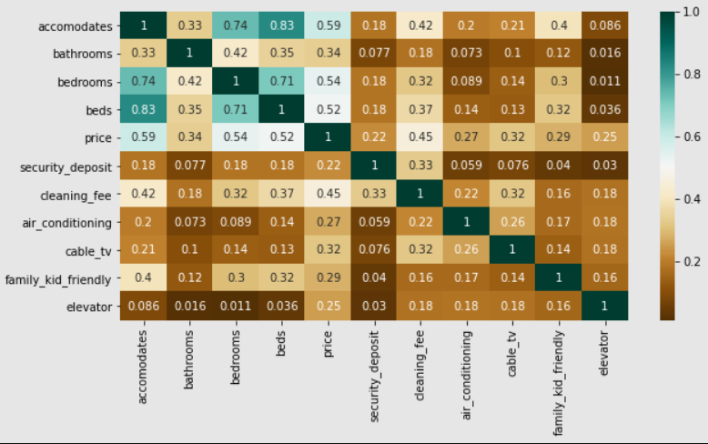
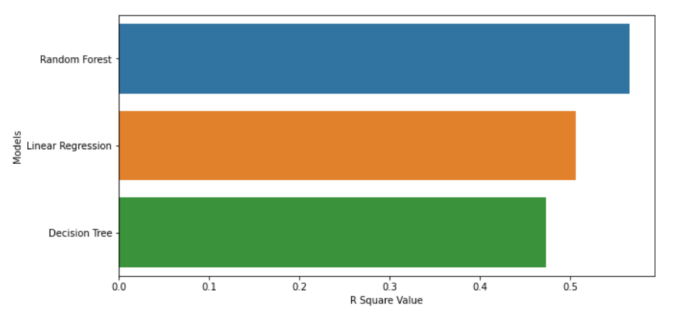
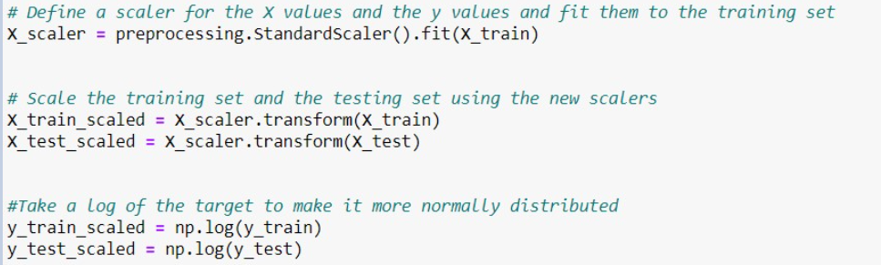

Machine Learning
Machine Learning
The lifecycle of our machine learning model:
Step 1: Data Exploration
Step 2: Data Cleaning Feature Selection
Step 3: Feature Selection
Step 4: Connecting to Mongodb Database
Step 5: Data Manipulation
Step 6: Machine Learning
Since we have 81 features/descriptive variables that affect the house price, we need to explore the data and understand the data structure, data types, and the meaning of each column as well as to check if there are any missing values and duplicates. Our dataset can be divided into 4 main groups: nominal(categorical), ordinal, discrete, and continuous. Each group is defined as below:
Nominal/categorical: non-numerical and lack clear-cut order such as Neighborhood, Room Type, Street.
Ordinal: categorical but have a clear cut order such as Overall Quality(10-Very Excellent, 1-Very Poor)
Discrete: numerical data that can only take certain values such as Pool, Kitchen
Continuous: numerical date that can take any value within a range (Host Acceptance Rate, Checkin 24hr)
We started off by checking the missing value ratio and drop those columns with more than 20% of missing data.

For simplicity reason, we divided our data into 2 categories only: categorical and numerical. Since we have 81 features, it seems more practical to select only the most relevant ones for our final model. Using heatmap from seaborn module, we were able to identify numerical variables that are highly correlated with the target: sent price. We can also order the variables based on the degree of correlation with sent price.
 At this stage, we selected the above top 9 numerical features that are highly correlated to rent price with additional 4 categorical variables( Air Conditioning, Neighbourhood Cleansed, Accomodates, Bedrooms, Beds, Cleaning Fee, Room Type, Security Deposit)that we thought might be important when guest are considering renting an Airbnb.
As required, we connected to our Mongodb database using the below code and import out cleaned dataset for building the machine learning model:

Label Encoding can be achieved using Sklearn library. LabelEncoder converts categorical variables to numeric values.

In this project, our goal is to predict Boston Airbnb rent price based on selected 8 feature variables. Supervised machine learning problems can be broadly divided into two types of problems: classification problems and regression problems. Classification is the process of predicting the class of given data points. it is used in credit approval, medical diagnosis, target marketing. Regression problems involve trying to predict a continuous target variable. As the sent price is continuous, this is a regression problem. The most basic regression technique available is Linear Regression. Linear regression attempts to model the relationship between two variables by fitting a linear equation to observed data. As we have more than two variables, Multiple Linear Regression will be more suited in our case. Multiple Linear Regression is used to estimate the relationship between two or more independent variables and one dependent variable. It is used if you want to find out the following:
1. How strong the relationship is between two or more independent variables and one dependent variable
2. The value of the dependent variable at a certain value of the independent variables
The advantages and limitations of Multiple Linear Regression is as follows:
Advantages
1. allows us to determine the relative influence of more than one predictor variables to the target variable.
2. enables us to identify outliers (find out the features that have a strong correlations and the ones that do not)
3. It is fast to run the model
Limitations
1. the size of the sample may lead to the pitfall of incomplete data
2. predictor values provide insights for limited features
3. If we want to create any linear model, it is essential that the features are normally distributed. This is one of the assumptions of multiple linear regression.
Another model that might address regression problem is Neural Network. Neural networks (also known as artificial neural networks, or ANN) are a set of algorithms that are modeled after the human brain. They are an advanced form of machine learning that recognizes patterns and features in input data and provides a clear quantitative output. neural networks are effective at detecting complex, nonlinear relationships. Neural networks also have greater tolerance for messy data and can learn to ignore noisy characteristics in data. The 3 biggest disadvantages are neural networks are prone to overfitting, layers of neurons are often too complex to dissect and understand, models might take a lot of time to run depending on the number of layers and number of epochs.
After trials and errors, we decided to use Multiple Linear Regression because it gave a comparable result as Deep Learning Model while having a more consistent result with significantly faster runtime.
The equation for Multiple Linear Regression is as follow:

Where, for i = n observations:
Yi = dependent variable/target
β0 = y-intercept
Xi1 = independent/ feature variable
β1 = slope coefficients for each feature variable
Εi = random error component
We used sklearn's LinearRegression() method to run our multiple linear regression. It will give us the best fit line for the data it receives which gives the best predictions overall for the training data; which minimizes loss between the line and the target values
The standard loss function used in linear regression is mean squared error(MSE). The mean squared error indicates how close a regression line is to a set of points. It does this by taking the distances from the points to the regression line (these distances are the “errors”) and squaring them. The smaller the mean squared error, the closer we are to finding the line of best fit.
The image below illustrates a line of best fit for a single feature variable, using the MSE

Besides from looking at the MSE, we also evaluate the performance of our model by checking the R2 Score. The R2 score ranges from 0 to 1, and can be thought of as the percentage of variation in the data that is explained by the predictive power of the model. The higher the score, the better the performance. 0% indicates that the model explains none of the variability of the response data around its mean, 100% indicates that the model explains all the variability of the response data around its mean. In our model. We tested the performance of our model by iterating different numbers of features to the model. Our goal is to have a decent R2 score while using the most practical number of features we can later put on our website for users to choose from.
Feature selection can be an important part of model selection. In supervised learning, including features in a model which do not provide information on the label is useless at best and may prevent generalization at worst. As a result, we excluded “_id”.

This process is to make sure that our model won’t overfit to particular data in that set and should generalize well to new data. If we simply train on the entire training data set, then our model will likely become overfit to the particular data in that set, such that it may actually be worse at predicting the sent price for new houses.

StandardScaler standardizes our feature variables by subtracting the mean and then scaling to unit variance. Unit variance means dividing all the values by the standard deviation. Standardization of a dataset is a common requirement for many machine learning estimators: they might behave badly if the individual features do not more or less look like standard normally distributed data. We chose to take a log of our target variable to normalize the data because it is easier to convert them back than using StanadardScaler in order to compare the original sent price and predicted sent price.

we got 86% by using 8 features in our model('air_conditioning', "neighbourhood_cleansed", "accomodates", "bedrooms", "beds","cleaning_fee","room_type","security_deposit") which indicate if the user input information for the selected 8 features, we should have 86% of predicting the accurate house price.
We plotted our predicted rent price against the actual rent price to see how the model performs. In a perfect mode with R2 score of 1, predicted value would equal actual value so there would be a straight diagonal line(x=y). As we can see from the below graph, our predicted prices are mostly scattered close to the straight diagonal line with few outliers.

Eliminate outliers
Use LabelEncoder for features that has order or hierarchy and One Hot Encoder for features that don’t have hierarchy to more accurately label encoding features (ex. neighborhoods)
Try PCA to process features